Hexo博客DIY（8）博客各部分背景设置
1. 站点背景图
先从最容易看到的开始，站点背景是内置支持的一个功能，只需要修改：/next/source/css/_custom/custom.styl 并增加代码：
1 | // Custom styles. |
然后在 next/source/images/ 下放入自己的图片（具体路径和图片名称可以自定义，但这里的路径是从主体根目录开始的）即可。
no-repeat是当你的图片小于显示大小时，是否通过重复图片铺满position可以自行指定背景图片的左右、上下位移距离size选择cover也即按比例拉伸铺满背景
效果参考我的博客背景，更多详细设置可以参考 Next 的文档。
2. 修改博客内容背景色
默认情况下，博客显示文章、文章列表、分类、标签、归档等等页面时，文字的底色就是白色，这其实不仅不美观，看久了还觉得累眼睛：
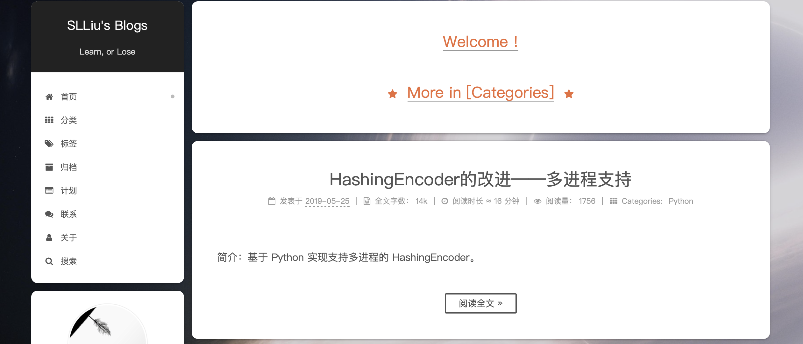
为了避免这种白底黑字的视觉效果，可以在 /next/source/css/_schemes/Gemini/index.styl 内找到：
1 | // Post & Comments blocks. |
把 background 默认的白色 white 修改为自定义颜色即可，我自己用的是 #ddd。此外，通常还会选择加一点透明度，网上比较大众的做法就是在 /next/source/css/_custom/custom.styl 内增加一段：
1 | .main-inner { |
这样加上了透明效果，看起来好多了！不会再像白底黑字一样过于刺眼，效果如下：
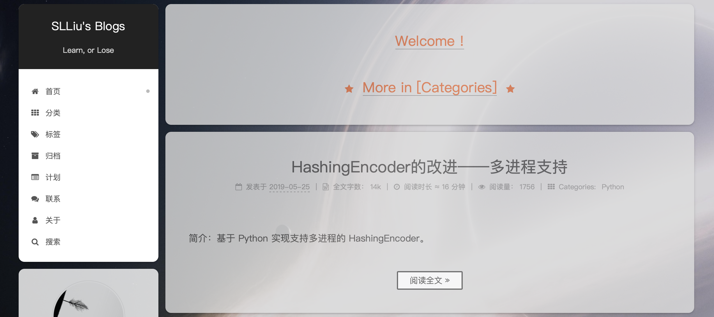
3. 修改侧栏背景
3.1 修改主侧栏背景
前两部分别自定义了背景和主体背景/透明度之后，会发现对显示“首页、分类、标签…”的这个侧栏并不生效，原因是这个侧栏属于单独的控件 header-inner，所以只需要在 /next/source/css/_custom/custom.styl 内加上这么一段即可：
1 | .header-inner { |
确实，可以改变主侧栏的显示透明度，不过这也会带来一个问题：搜索框不显示，或者只能透出一点点但无法输入也无法获取焦点，这个问题以及解决方案在：Hexo博客DIY（5）博客站内本地搜索及相关问题中的第 4 点有详细介绍，可以参考一下。简单来说就是把这个透明度改为单独的带有透明效果的 RGB 主体底色：
1 | .header-inner { |
效果如下：
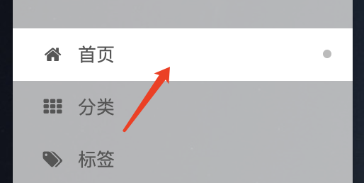
颜色的选择可以和主体底色一致，看起来比较和谐。不过还有一个地方就是主侧栏上的不同菜单，已被选定的、鼠标悬停的高亮菜单颜色还是白底，修改的文件在 themes/next/source/css/_schemes/Pisces/_menu.styl：
1 | .menu-item-active a { |
修改完的效果：
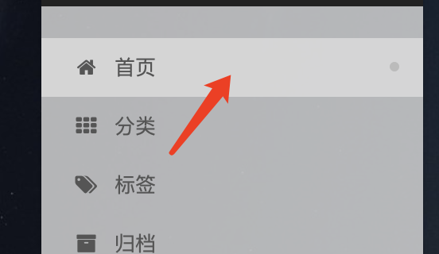
3.2 修改浮动侧栏背景
同样，浮动侧栏（阅读文章时显示目录的侧栏）的背景色默认也是白色：
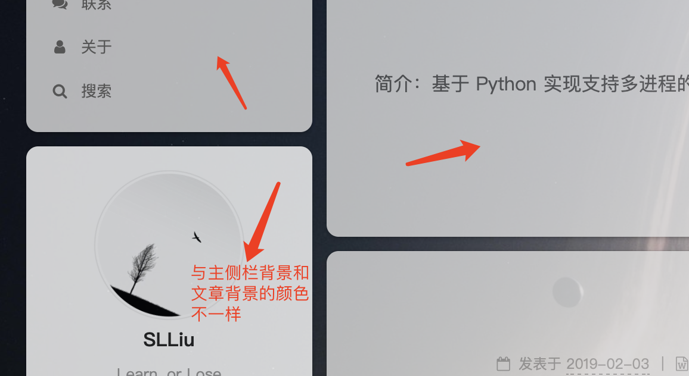
可在 /next/source/css/_schemes/Pisces/_sidebar.styl 中修改：
1 | .sidebar-inner { |
我把 background 默认的 white 同样改为了 #ddd，理论上也可以直接在 custom.styl 内修改，不过还没尝试过，效果如下：
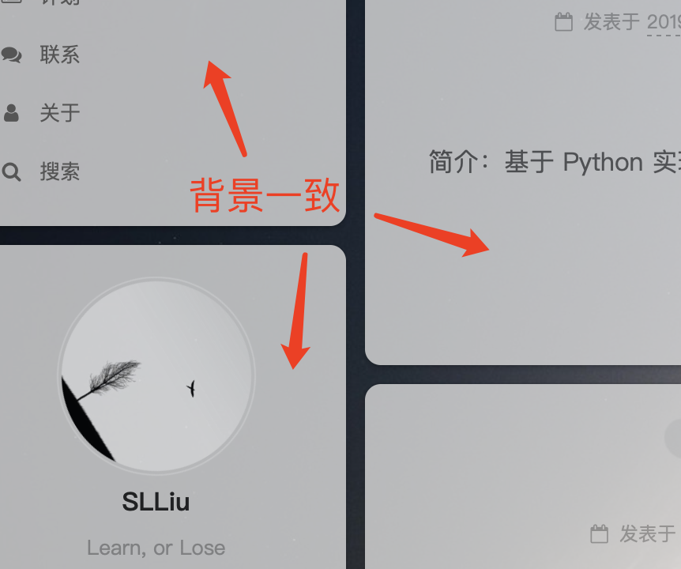
4. 修改“阅读全文”按钮背景
在修改完前面几个背景之后，还有一个问题，就是“阅读全文”这个按钮的颜色还是原来的白底黑字，和文章底色相比显得有些突兀：
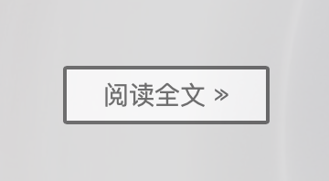
修改这个按钮在 /next/source/css/_common/components/buttons.styl：
1 | .btn { |
同样改为了 #ddd，同理下面的代码还可以修改鼠标覆盖时的效果、大小、表框、内距外距等，修改效果如下：
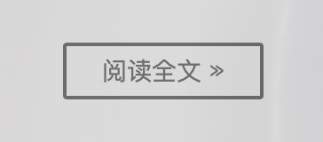
。如果想要修改全局颜色，可以在 /next/source/css/_variables/base.styl 中查找到对应全局颜色并修改。当然这个文件里面除了颜色外，还有一些角度、尺寸等等都是全局性的。
5. 修改评论区背景
评论区和博客文章、主体区是两个部分，评论区的背景需要单独设置，在 /next/source/css/_schemes/Gemini/index.styl 中修改：
1 | // Comments blocks. |
修改成和文章主体同样的 #ddd，效果如下：
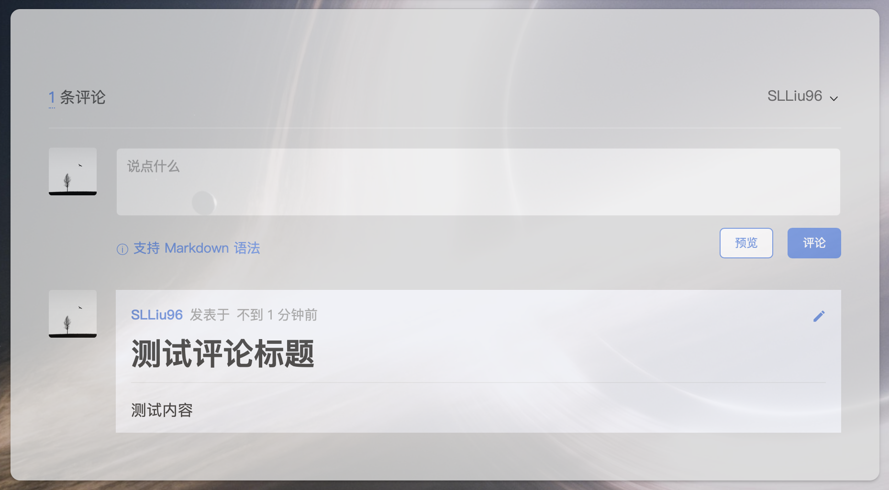
看起来舒服多了！
6. 修改博客顶部横条背景
在默认情况下，站点的顶端其实有一个横条，横条默认是和菜单颜色一致的，平时可能看不出来，但是如果把页面拉到顶端再往上拉一点（可能用鼠标滚轮无法显示，用笔记本的触控板可以）就会看到有这么一个条：
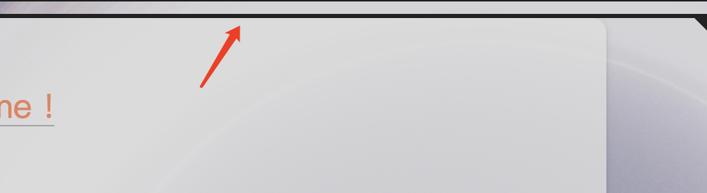
在普通情况下，当页面拉到顶端时，这个条使得主侧栏和主体部分和页面顶端有一个连接的感觉，会导致感觉上顶部的圆角有点违和：
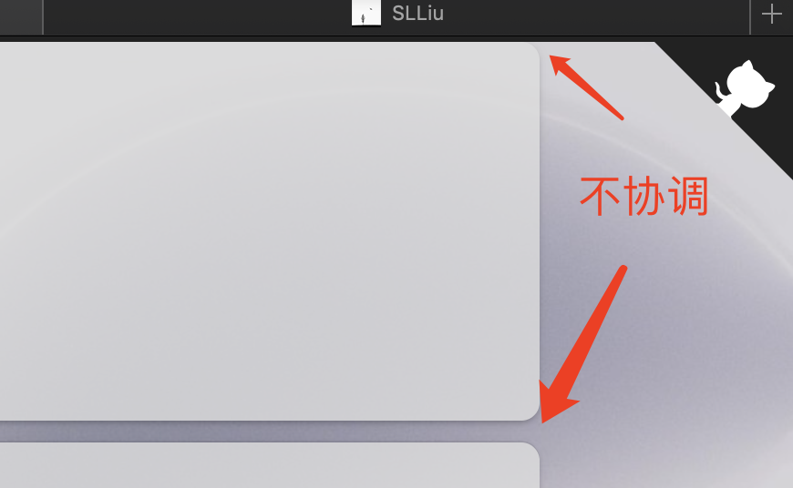
为了去掉这个条，但又使得顶部能空出一小段距离，可以在 next/source/css/_common/components/header/headerband.styl 中修改：
1 | .headband { |
默认情况下，主页文章之间的间隔大概在 10 ~ 15 左右，因此我把宽度设置为 10，并且把颜色设置为透明，效果如下：
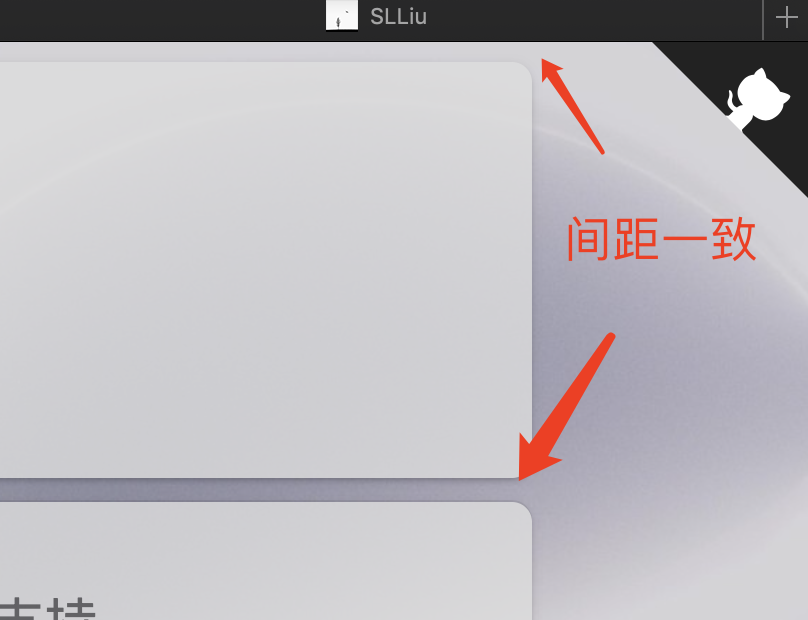
7. 修改过渡动画速度
默认的过渡动画其实挺慢的，每次载入的时候都觉得等了很久，尤其是有时候找文章或者需要来回切换页面的时候，每次都要等一会儿页面才加载进来的感觉特别不爽，于是找了一下源码，发现动画速度是由这个文件控制的：next/source/js/motion.js，打开并修改其中 duration 字段的值，根据自己的喜好修改即可，我自己用的方案如下：
1 | showSidebar: function() { |
除了以上标明的三处之外，其他的 duration 字段都设置成 80。
8. 菜单栏小标背景
菜单栏的分类、标签、归档等有一个小标记：

这个效果是在站点配置文件中开启 badges：
1 | # Enable / Disable menu icons / item badges. |
相关背景设置修改 next/source/css/_schemes/Pisces/_menu.styl：
1 | .badge { |
更多进一步的个性化欢迎参考：博客 DIY 系列